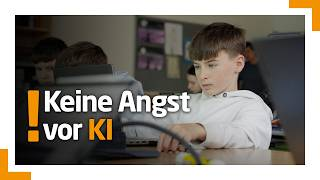
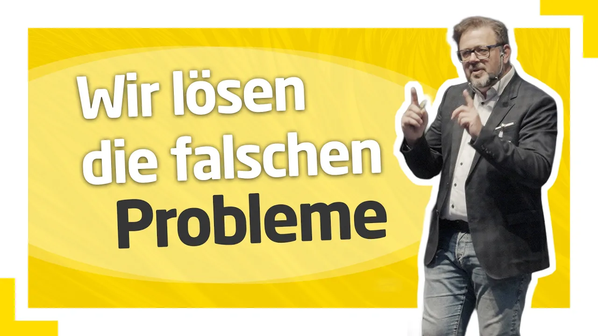

Bildungspolitik · Pressekonferenz · 23 Min.
Schulstart 2026/27: Das wird neu an Österreichs Schulen
Was ändert sich im neuen Schuljahr? Die zentralen Vorhaben des Bildungsministers im vollständigen Mitschnitt.
Deutschförderung, Gewaltprävention, Handyregeln und weitere Vorhaben: Bildungsminister Christoph Wiederkehr stellt die Schwerpunkte für das neue Schuljahr vor.
Bildungsminister Christoph Wiederkehr stellt die zentralen Vorhaben für das neue Schuljahr vor – von der Situation bei den Lehrkräften bis zu den Projekten, die Schülerinnen und Schüler stärken sollen.
Zeitcodes wurden für die Lesefassung entfernt.
Sehr geehrte Damen und Herren, herzlich willkommen im Bildungsministerium. Ich darf einen Blick auf das nächste Schuljahr mit Ihnen werfen. Die Sommerferien sind ja schon weiter fortgeschritten. Die Sommerschule hat gestartet und mit 7. September geht es auch schon wieder los. In Ostösterreich, in Niederösterreich, in Wien und im Burgenland. Viele tausende Schülerinnen und Schüler und Familien sind schon dabei, sich vorzubereiten auf ein Neues Kapitel in ihrem Leben. Insbesondere für diejenigen, die neu in der Schule beginnen, ist das eine ganz besondere Zeit. Aber auch für die, die dann in weiterführende Schulen gehen, ist es eine besondere Zeit auch der Veränderung.
Es ist auch eine Zeit für mich als Bildungsminister, darauf zu schauen, wo wir stehen. Und das möchte ich mit ihnen machen, wo wir stehen, in der Sommerschule, wo wir stehen beim Bestellung sprozess von Lehrkräften. Und ich möchte Ihnen zehn Projekte vorstellen, die im kommenden Schuljahr die Bildung in Österreich, die Schülerinnen und Schüler stärken werden. Aber starten wir mit dem aktuellen Stand und dem Topthema der letzten Jahre, nämlich dem Lehrkräftemangel. Ich kann Ihnen sagen, dass die Trendwende gelungen ist. Nämlich, dass wir es geschafft haben, dass wir wieder ausreichend Bewerberinnen und Bewerber um diesen wichtigen und schönen Beruf haben.
Insgesamt haben wir auf die offenen Stellen 18.587 unterschiedliche Bewerbungen erhalten. Das bedeutet Personen, die sich zum Teil auf mehrere Stellen beworben haben. Damit haben wir einen klaren Anstieg der Anzahl der Personen, die in der Schule arbeiten wollen. Von diesen 18.587 sind 1808 Quereinsteiger Personen. Auch das war in den letzten Jahren immer wieder Thema. Wie viele Personen wollen einen Beruf einsteigen? Und ich möchte auch hier das Bekenntnis dazu geben, dass auch in Zeiten, wo der Lehrkräftemangel weniger wird, ein qualifizierter Quereinstieg sinnvoll ist für das Bildungssystem, weil damit auch zusätzliche Expertise auch aus der Privatwirtschaft, von Personen, die jahre und jahrzehntelang Erfahrung im Arbeitsleben gesammelt haben, auch in die Schule kommt.
Der flächendeckende Lehrkräftemangel ist zurückgedrängt. Es gibt ihn allerdings noch regional und in unterschiedlichen Bereichen, beispielsweise in der Volksschule. Manchen Bundesländern haben wir noch ein Thema und bei manchen Fächern exemplarisch naturwissenschaftliche Fächer oder auch Sport. Da haben wir weiter Bedarf und auch die nächsten Jahre noch Bedarf. Wir sehen allerdings auch, dass die Anzahl der die Lehramt studieren wollen, im kommenden Schuljahr stark gestiegen ist. Und auch das ist eine erfreuliche Nachricht und zeigt Der Beruf gewinnt wieder, verdient an Attraktivität. Die Sommerschule hat in Ostösterreich gut gestartet. Wir haben hier einen Rekord, nämlich von über 58.500 Schülerinnen und Schüler, die Österreicher angemeldet sind, für die Sommerschule.
Es gibt über 900 Standorte österreichweit, an denen die Sommerschule stattfinden wird. Und es haben sich über 7000 Lehrkräfte beworben, von denen viereinhalb 1000 tatsächlich zum Einsatz kommen. Sie können sich erinnern an die Diskussion Haben wir überhaupt ausreichend Lehrkräfte für den Sommer? Es ist gelungen. Wir sehen, Das Angebot ist beliebt und ist auch wichtig. Es ist ja das erste Mal verpflichtend für außerordentliche Schülerinnen und Schüler, die nicht ausreichend Deutsch können, die in Deutsch Förderklassen sind, damit sie einen Start Vorteil bekommen für das Schuljahr. Neben dem Überblick über diese zwei Themen möchte ich Ihnen die zehn Projekte kurz skizzieren, die im kommenden Schuljahr die Schulen besonders stärken werden.
Dass erstens der Chancenbonus ein ganz wichtiges Programm für mehr Chancengerechtigkeit im Bildungswesen, aber auch für mehr Treffsicherheit, weil wir nicht mehr mit der Gießkanne finanzieren für jede Schule, sondern die 400 Schulen von diesem Programm profitieren werden, die besonders gefordert sind aufgrund der Zusammensetzung der Schülerinnen und Schüler. Und diese 400 Schulen bekommen insgesamt 800 Personen, die diese Schulen unterstützen, nämlich neben Lehrkräften in zehn weiteren Personalkategorien, beispielsweise in Sozialarbeit, Schulpsychologie, Psychotherapie, Legasthenie, Disco, aber auch Tanzpädagogik. Hier sind neue Berufsgruppen multiprofessionelle Teams, die die Schulen unterstützen und welche Personen zum Einsatz kommen.
Das entscheidet nicht das Ministerium oder die Bildungsdirektion, sondern die Schulen selber haben am Standort geschaut, was brauchen Sie haben einen Plan erstellt, wie sie Bildung am Standort verbessern können und haben dementsprechend auch die Personalgruppen beantragen können, die für sie besonders wichtig und relevant sind, um so den Schulen Autonomie zu geben. Denn ich bin der Überzeugung, die Schulen wissen vor Ort am besten, was sie brauchen und wir wollen sie dabei unterstützen. Zweitens Die Deutschförderung, seit Beginn meiner Amtszeit. Der größte Schwerpunkt dann alle, die in Österreich leben, insbesondere die, die in die Schulen gehen, die müssen die deutsche Sprache beherrschen und lernen.
Hier haben wir große Defizite. Deshalb haben wir die Planstellen massiv aufgestockt. Was ist neu im kommenden Schuljahr? Es ist neu, dass die Schulen schul autonom eigene Deutsch fördermodelle etablieren dürfen. Erstmals. Diese Autonomie geht mit einer Verantwortung her, nämlich bessere Leistungen zu erzielen. Ich bin davon fest überzeugt Wenn am Standort selber entschieden wird, bearbeitet wird das dann bessere Modelle zum Zug kommen als das Bisheriger, das ja sehr, sehr stark war. Wir haben 52 % aller Schulen mit Deutsch Förderklassen, die im kommenden Schuljahr ein autonomes Modell wählen werden. Die haben ein Konzept erstellt, nämlich Wie findet Deutsch Förderung statt?
An all diesen Schulen muss Deutsch Förderung stattfinden. Sie bekommen allerdings mehr Flexibilität, wie das organisiert sein wird? Drittens mehr Transparenz. Schuldaten wären erstmals im fairen Vergleich veröffentlicht. Das führt zu mehr Transparenz und damit zu einem besseren Umgang mit Schuldaten. Wir wissen Schul Daten sind der Schlüssel für bessere Schule, für Schulentwicklung. Und mit dieser Veröffentlichung werden wir die Schulentwicklung unterstützen. Und ab Oktober werden hier die Volksschulen im fernen Vergleich veröffentlicht über eine Plattform des Bildungsministeriums, wo auch für Eltern und für die interessierte Öffentlichkeit auch für sie ein guter Überblick da sein wird über die Schulen, die es in Österreich gibt.
Das vierte, das mittlere Management, um mehr Zeit an den Schulen zu haben für pädagogische Führung und damit die Qualität in den Schulen zu verbessern. Dafür stehen im kommenden Schuljahr 620 Planstellen zur Verfügung. Im Vollausbau sind es dann 800 Planstellen. Diese mittlere Management unterstützt die Schulleitung bei unterschiedlichen Themen, kann bei der Deutschförderung sein, kann aber auch bei der Schulentwicklung sein, um so Unterricht an den Standorten zu verbessern und auch Lehrkräften eine Entwicklungsperspektive zu geben. Wir wissen Die bürokratischen Aufwände sind hoch, die wollen wir zurückdrängen. Zusätzliche Unterstützung in diesem Bereich ist wichtig, und es ist eine zusätzliche Entwicklungsmöglichkeit für besonders engagierte Lehrkräfte.
Es ist aber nicht der Satz zum Projekt Nummer fünf, nämlich Freiraum, Schule, Bürokratie wird auch in Zukunft zurückgedrängt werden. Wir haben 80 % der Rundschreiben außer Kraft gesetzt und arbeiten hier ständig weiter, nämlich bürokratische Hürden abzubauen, beispielsweise über Teachers Direct. Das ist ein zentrales digitales Kommunikationstool, mit dem Lehrkräfte auch Anträge und auch Themen digital übermitteln können und nicht mehr am Papier ausfüllen müssen und per Post irgendwo hinschicken müssen, sondern mit einem Klick auch Meldungen gemacht werden können, beispielsweise bei einer Schwangerschaft Nummer sechs Wir wollen Schulabbruch reduzieren und dort, wo sie passieren, besser begleiten.
Damit werden wir Perspektiven, Gespräche einführen. Die werden jetzt rechtlich verpflichtend sein, nämlich Schulabbrecher innen und Schulabbrecher werden ein Gespräch bekommen am Standort, um ihre über ihre weitere Perspektive zu reden. Weil Es kann passieren, dass eine Schule abgebrochen werden muss. Es darf aber nicht passieren, dass man keine Perspektive danach mehr hat. Und das ist das Ziel, Perspektiven zu eröffnen. Nummer sieben sbegleitung. Ein für mich sehr, sehr wichtiges Projekt, weil wir eine immer höhere Zahl haben an Kindern, die leider suspendiert werden müssen. Es ist wichtig, dass es das Instrument gibt, nämlich wo eine Gefährdung stattfindet, dass auch Schülerinnen und Schüler für eine gewisse Zeit der Schule verwiesen werden können. Bisher gab es da keine Begleitung.
Die konnten im Einkaufszentrum abhängen, in den Park gehen, auf Instagram posten. Das wird in Zukunft nicht mehr möglich sein, sondern es gibt eine verpflichtende Begleitung, wo es sowohl pädagogisch, das heißt Stoff vermittelt wird als auch psychosozialen, mit den Kindern und Jugendlichen gearbeitet wird, weil das Ziel immer sein muss, eine Resozialisierung in den Klassenverband zu schaffen, damit so auch wieder ein angemessenes Verhalten an den Tag gelegt wird und auch Bildung gelebt und erlebt werden kann. Diese Suspendierung sbegleitung ist verpflichtend zwischen 28 Stunden. Und hier unterstützen wir über zusätzliches Personal. Das ist das Projekt Nummer acht.
Wir bauen das psychosoziale Unterstützungspersonal aus. Im kommenden Schuljahr wird es 70 neue Schulpsychologen und Schulpsychologen in Österreich geben. Das sind Planstellen, die wir trotz knapper Budgets verhandeln konnten, die auch wichtig sind und bei der Suspendierung sbegleitung zu unterstützen, aber auch bei anderen Themen der psychischen Gesundheit. Damit schaffen wir es seit Beginn der Amtszeit mit nächstem Jahr die Anzahl der Schulpsychologen und Schulpsychologen zu verdoppeln. Ein ganz wichtiger Schritt für die Gesundheit der Kinder und Jugendlichen. Das Projekt Nummer neun das Kopftuchverbot für unmündige Schülerinnen und Schüler.
Sie haben alle darüber schon berichtet. Das tritt in Kraft mit kommenden Schuljahr noch nicht in der Sommerschule, sondern mit kommenden Schuljahr, wo es für unter 14-jähriger verboten sein wird, mit Kopftuch in die Schule zu gehen. Wichtig zu sagen ist, dass es Gespräche geben soll, wenn dieses Verbot nicht eingehalten wird und es Eskalationsszenarien gibt, nämlich von einem Hinweis Gesprächen mit den Eltern bis hin zu einem Verwaltungsverfahren, wo am Ende, wenn die Eltern keine Einsicht zeigen und die Gesetzeslage nicht einhalten, Strafen in Höhe von bis zu 800 € bekommen können und das nicht einmalig, sondern wiederholt ist. Wenn das Gesetz nicht befolgt wird, kann auch mehrmals eine Strafe verhängt werden.
Der Grund ist ein Schutz der jungen Mädchen, nämlich in ihrer Freiheit, in ihrer Entwicklung, um ihnen hier auch Freiheiten zu geben, Entwicklungsmöglichkeiten zu geben und sie zu schützen vor patriarchalen Vorstellungen, wie sie sich zu kleiden haben. Das Kopftuchverbot wird gut begleitet, weil uns ist bewusst, dass kann zu schwierigen Situationen im Klassenzimmer führen. Und deshalb ist es wichtig, dass die Lehrkräfte im Klassenzimmer diese Fehler melden und die dann weiter besprochen und bearbeitet werden und nicht im Klassenzimmer selber ein Konflikt ausgetragen werden muss. Wir wollen hier die Lehrkräfte bei der Umsetzung dieses Gesetzes unterstützen.
Abschließend Das Projekt Nummer zehn ist eine Unterstützung für Eltern und für Familien im Bereich der Schulbeihilfe daheim, Beihilfe zur Unterstützung von Schulveranstaltungen und auch der Schüler Freifahrt und der Schulfahrtsbeihilfe. Hier gibt es Unterstützung sprogramme des Ministeriums. Darüber hinaus gibt es Programme in den Ländern. Mir ist es wichtig, diese zu erwähnen, weil sie noch nicht allen Eltern bekannt sind, nämlich wo es finanzielle Schwierigkeiten gibt, kann es auch Unterstützungen geben. Denn das Ziel ist klar, dass alle Schülerinnen und Schüler gute Bildung erhalten. Mit diesem Paket sorgen wir dafür, dass der Schulstart personell gesichert ist.
Wir schaffen mit der Sommerschule bessere Bildungschancen für alle Kinder. Mit dem Chancenbonus investieren wir gezielt bei Standorten mit besonderem Bedarf. Mit der Deutschförderung geben wir die deutsche Sprache in den Mittelpunkt. Denn Deutsch ist nicht optional, sondern es ist Pflicht. Mit Schulstandorte zifischen Daten, die wir veröffentlichen, schaffen wir mehr Transparenz und Schulentwicklung. Und mit dem mittleren Management entlasten wir die Schulleitungen. Mit Freiraum Schule wollen wir Bürokratie zurückdrängen und mit Perspektiven, Gesprächen und Suspendierung sbegleitung unterstützen wir auch Schülerinnen und Schüler in schwierigen Phasen, um so nicht den Anschluss zu verlieren.
Deshalb bin ich überzeugt, mit all diesen Projekten und mit dem aktuellen Status, dass wir gut vorbereitet und gestärkt in das kommende Schuljahr schauen. Und ich danke für Ihre Aufmerksamkeit. Vielen Dank. Gibt es Fragen? Kein einziger. Bitte. Danke. Bergauf. Marvin 24 TV. Zum Kopftuchverbot. Kann man sich das so vorstellen, dass sie die Eltern jeden einzelnen Tag dann 800 € zahlen müssen? Oder gibt es da dann weitere Mechanismen? Die Strafe wird fällig, wenn das Verwaltungsverfahren beendet ist. Das Verwaltungsverfahren wird eingeleitet über die Bildungsdirektion. Das heißt ganz bewusst nicht über die Lehrkräfte am Standort, sondern über die Direktion geht es dann an die Bildungsdirektion.
Die können als Behörde dann bei einem Verwaltungsverfahren einleiten. Wenn dieses abgeschlossen ist, gibt es eine Strafe, wenn es nicht umgesetzt wird. Das heißt weiterhin ein Fehlverhalten stattfindet, kann dieses Verfahren neu eingeleitet werden. Aber wir leben in einer Rechtsstaat. Das heißt, die Behörde hier die Verwaltung sbehörden, müssen wieder eine Strafe verhängen. Wie lange? Das dauert es, abhängig vom Zeitverlauf der Behörde. Danke. Bitte. Aber ich würde da gleich die Frage dran dranhängen Wie lange kann dieses Spiel gehen Im Schuljahr? Da gibt es immer wieder eine Strafe nach der anderen. Was ist, wenn jetzt die Eltern sich weiterhin konstant weigern, dass das Kind kein Kopftuch trägt?
Gibt es dann trotzdem auch weiterführende Maßnahmen oder ist das dann halt der Status quo? Rechtlich ist es eine Übertretung einer Norm mit einer Verwaltungsverfahren einhergehend, so wie in der Straßenverkehrsordnung. Wenn man sich nicht daran hält, immer zu schnell fährt, kann man immer wieder eine Strafe bekommen. Im Bereich des Kopftuchs ist es auch so, dass die Behörden wohl den Strafrahmen erhöhen werden. Sie werden nicht beachtet. 100 € beginnen also bis zu 800 €. Das heißt, wenn ein Gesetz nicht eingehalten wird in diesem Bereich, wird die Strafe dann auch sukzessiv erhöht werden. Ist aber die Verantwortung natürlich dann der Verwaltung sbehörden, die darüber entscheiden.
Klar ist Ein einmaliges Freikaufen ist nicht möglich. Das heißt, es wird hier wiederholter Strafen geben. Denn wichtig ist Alle, die in Österreich leben, die müssen sich an die Gesetzeslage halten. Und das ist ein Gesetzes beschluss, der mit klarer Mehrheit im Parlament beschlossen worden ist. Deshalb auch mein Appell an alle, sich an die Gesetzeslage zu halten. Danke. Gibt es weitere Fragen? Bitte. Herr Minister, unter Ihren zehn Punkten ist nicht dabei, jetzt eine Beschattung oder für eine Kühlung in den Klassenzimmern zu sorgen. Da gibt es bisher nur die eher vage Ankündigung, dass das bei älteren Schulen aufgerüstet werden soll. Gibt es da dazu schon konkrete Pläne? Was?
Was ist da Ihr Vorhaben? Es soll ja diese Woche doch wieder 36 Grad bekommen. Also der Schulstart könnte erneut auch ein heißer werden. Ich habe ganz bewusst am Ende des letzten Schuljahres in der extremen Hitze Phase einen Hitzeschutzgipfel einberufen. Hier Ministerium mit Schulpartnern, aber auch Expertinnen und Experten, um gemeinsame Maßnahmen zu beraten. Herausgekommen ist, dass wir einerseits in die Infrastruktur investieren müssen, nämlich Begrünung, Beschattung, Belüftung, aber auch und außerdem Maßnahmen setzen müssen, damit die Schulen mehr Autonomie bekommen in Hitzewellen. Hier auch vor Ort Entscheidungen treffen zu können, beispielsweise den Sportunterricht zu verschieben oder abzusagen, Prüfungen zu verschieben oder auch Unterrichtsstunden zu verkürzen.
Hier gibt es ein gemeinsames Bekenntnis der Bundesregierung über einen Ministerrat Vortrag, der im Sommer beschlossen worden ist. Jetzt geht es darum, den legistisch auszuarbeiten, um so schnell dann im Parlament zu einem Gesetz zu kommen, wo dann Hitzeschutzmaßnahmen an den Standorten selber getroffen werden können. Die Infrastruktur ist ein Kraftakt, die Investitionen sind extrem hoch, die notwendig sind. Hier muss man sagen die Schüler Halter sind unterschiedliche Gebietskörperschaften. ÖSTERREICH Der Bundesministerium ist ausschließlich für die Bundesschulen im Gebäude zuständig. Wir haben hier einen Plan, 50 Schulen zu priorisieren. Die sind ausgewählt, die sind auch schon analysiert.
Diese 50 Bundesschulen werden vorrangig, weil dort die Hitze Belastung besonders groß ist, hier jetzt entsprechend ausgestattet. Da gibt es pro Schulstandort unterschiedliche Maßnahmen, denn es gibt hier nicht einen Weg für alle, sondern es gibt unterschiedliche Maßnahmen, die getroffen werden können. Danke schön. Bitte sehr. Danke schön. Die Kronen Zeitung berichtet von einem Fall einer Tiroler Muslimin, die islamische Religionspädagogik studiert hat und jetzt schon zweimal von der IHK abgelehnt wurde als Lehrerin. Sie vermutet, das nicht tragen eines Kopftuchs. Der Hauptgrund ist. Im zweiten Versuch heuer, wo ja die IHK die Bedingungen zum Kopftuch gelockert hat, ist sie trotzdem wieder abgelehnt worden und auch zum Kopftuch befragt worden.
Auch wurden ja besonders pezifische fachliche Fragen gestellt. Jetzt sagt der Professor Aslan So was überrascht die gar nicht. Und auf der anderen Seite haben die gar nicht die Kompetenz, ihre fachlichen Eigenschaften zu beurteilen. Das macht die Uni. Was sagen Sie zu so einem Fall? Bzw. Sehen Sie den Handlungsbedarf? Ich kenne den Fall nicht und deshalb kann ich ihn auch nicht kommentieren. Gibt es weitere Fragen? Bitte schön. Achso, okay. Zur Deutsch Förderung Sie geben an, dass die Schulen mehr Autonomie erhalten. Dennoch haben nur 52 % aller Schulen ein Konzept eingereicht. Warum sind das nicht alle? Und wie wollen Sie sicherstellen, dass Schulstand unabhängig die gleiche Qualität an Deutsch Förderung vermittelt wird?
Das Wichtige und das Schöne an der Schulleitung onomie ist Sie muss nicht gewählt werden. Es ist eine Freiheit, die mit Verantwortungen hergeht, und die muss am Standort selber entschieden werden. 52 % der Schulen, die einen anderen Weg gehen als der, der gesetzlich als Normalfall normiert ist, ist eine hohe Anzahl. Das ist in anderen Bereichen, wo Schul autonomer Möglichkeiten gegeben sind, haben wir deutlich weniger. Ich finde das eine sehr hohe Anzahl und es zeigt, dass die Schulen hier andere Wege gehen wollen, nämlich einer effektiven, einer guten Deutsch förderung, die am Standort auch angepasst ist. Wir stellen sicher, dass die Qualität gegeben ist.
Das können wir als Ministerium. Wir haben nämlich standardisierte Testungen auch in der deutschen Sprache über ein Plus, die auch jetzt im Drei Jahres Zyklus veröffentlicht werden. Dass wir sehen, wie sich die Schulstandorte entwickeln. Wir haben die Anzahl der außerordentlichen Schülerinnen und Schüler, die nicht gut genug Deutsch können. Das wird jährlich gemessen. Wir haben hier sehr, sehr viele Instrumente, um zu wissen, wie die Deutschförderung in Österreich geht. Aus meiner Sicht war es nicht gut genug. Deshalb haben wir hier viele Maßnahmen gesetzt, um eine Aufholjagd zu starten, damit wirklich alle Kinder die deutsche Sprache auch gut beherrschen.
Eine Frage ich jetzt doch noch. Und so geht es um die Veröffentlichung der standardbezogenen Schuldaten. Da gab es ganz große Aufregung unter den Lehrern, unter den Direktor, natürlich auch von der Lehrergewerkschaft. Hier steht die Direktoren haben die Möglichkeit, vorab die Daten einzusehen und und einzuordnen, Haben die dann aber auch ein Mitspracherecht und gesagt Das ganz Große, die ganz große Angst bei den Lehrern ist ja, dass es dann doch irgendwann zu einer Art Schulranking kommt. Wie schaut es aus? Sie dürfen es zwei einsehen, aber ändert nichts daran. Mir war besonders wichtig, die Schulen rechtzeitig einzubinden. Sie Schulen haben schon im vergangenen Schuljahr hier die STANDARD spezifischen Daten bekommen.
Was zum Beispiel in der Volksschule. Wo stehen Sie im Bereich Lesen? Wo stehen Sie im Bereich Mathematik oder auch bei anderen Schulen? Wo stehen Sie im Bereich Englisch? Wir haben hier zentrale Leistungs feststellungen. Die haben die Schulen bekommen, damit sie auch damit arbeiten können. Das ist auch das Wichtige an Schuldaten, dass am Standort damit gearbeitet wird, damit man auch Maßnahmen trifft, um gemeinsam besser zu werden. Die Transparenz in diesem Bereich soll dazu führen, dass die Daten auch gemeinsam analysiert werden, dass es hier am Standort Maßnahmen gibt, die getroffen werden können. Ziel sind keine Rankings und damit wird es auch keine absolute Veröffentlichungen der Daten geben, sondern immer nur im Fernvergleich.
Fairer Vergleich heißt nur Schulen, die auch miteinander vergleichbar sind, weil sie ähnliche Ausgangslagen haben und dann auch nicht mit absoluten Daten, sondern im Vergleich zu anderen Schulstandorten. Ab Oktober wird das auch in der Öffentlichkeit sein. Und wir hatten hier genug Zeit und haben auch noch Zeit mit den Schulen diese auch kulturelle Veränderung zu besprechen, sie darin zu begleiten. Aber ja, die Daten sind absolut. Diese Daten kann man nicht verhandeln oder verändern, denn sie sind absolute Leistungs Feststellungen.
Was ändert sich im neuen Schuljahr? Die zentralen Vorhaben des Bildungsministers im vollständigen Mitschnitt.

Von der Volksschule bis zum sonderpädagogischen Bereich: Drei Schulen zeigen, wie KI bereits heute zum Lernwerkzeug wird.

Kai Maaz über Schulautonomie, Chancengerechtigkeit, Führung und die Strukturen hinter erfolgreicher Schulentwicklung.
Drei Pflichtschulen zeigen, wie Künstliche Intelligenz bereits im Schulalltag eingesetzt wird. Der Beitrag reicht von ersten Erfahrungen in der Volksschule über Chatbots und Lernvideos bis zum Einsatz im sonderpädagogischen Bereich – und fragt auch nach einem kritischen Umgang mit den Ergebnissen.
Zeitcodes wurden für die Lesefassung entfernt.
Es ist Teil der Lebensrealität und somit muss KI auch im Unterricht stattfinden. Die KI per se ist ja weder gut noch schlecht, sondern einfach ein Werkzeug und es kommt darauf an, was man daraus macht. Ein Verbot an der Schule, das bringt natürlich nichts. Als hätte damals wer das Internet verboten. In dem Alter ist es trotzdem auch schon wichtig, dass die Kinder beides erfahren: Risiken und was kann die KI. Künstliche Intelligenz verändert die Art, wie wir leben und wie wir lernen. Doch viele Lehrkräfte sind noch unsicher, welche Tools sie wie einsetzen. Ein Viertel der Lehrerinnen und Lehrer lässt lieber ganz die Finger von KI, zeigt die aktuelle Jugendmedienstudie.
Wie es anders geht? Wir besuchen drei Pflichtschulen, wie sie KI im Unterricht einsetzen und welche Erfahrungen sie dabei gemacht haben. Der Vorteil in der Volksschule ist für Kinder ist das alles ganz spannend, genauso spannend wie für uns Lehrer und Lehrerinnen ist es ein ganz spannendes, neues Thema. Und ich glaube, da ist wichtig, dass man ein Team hat, das einfach zusammen hilft, wo man sagt, es gibt kein Richtig oder Falsch. Wir testen einmal, wie kann man das umsetzen im Unterricht und dann in ganz kleinen Schritten baut man das ein. 20. Zehn. Sechs. Wie wir heute gesehen haben bei der schlauen Eule. Man kann mit der KI Rechnungen durchführen und die richtet sich nach dem Kind, passt sich den Stärken an, das ist für die Kinder spannend.
Für uns ist es auch spannend, auch zu sehen, was einmal nicht so klappt. Vier. Vier. Die Volksschule Hagenberg im Mühlkreis ist KI-Pilotschule. Schon ab den zweiten Klassen kommt die künstliche Intelligenz zum Einsatz, aber ohne die Grundlagen zu vernachlässigen. Natürlich, die Basics müssen gelernt werden. in der Schule. KI und digitale Medien sollen nicht im Vordergrund sein. Wir haben da bei einem Projekt teilgenommen. Projekt digi.case. Das geht immer vom Analogen aus. Das machen wir auch. Da gibt es auch einen KI-Teil bei digi.case, wo analoge Karten sind. Da hat man mal was Haptisches in der Hand. Man spielt Situationen nach, da gibt es Arbeitsblätter dazu und erst später kommt das Digitale und das ist das Wichtige.
Diese Mischung macht's aus zwischen analog und digital. Lebt es in einem Wald? Ja. Frisst es Heu? Nein. Frisst es Gras? Nein. Ist es ein Bär? Ja. Wenn die KI dir zum Beispiel so ein Bild von einem Bär erstellen soll, dann musst du dem auch sagen, wie der zum Beispiel ausschauen soll. Ob er zum Beispiel ein rosa Fantasiebär sein soll. Und das funktioniert so ähnlich bei diesem Spiel halt nur dass du jetzt selber die KI bist und du fragst halt den, der das Bild haben will. Wenn ich zum Beispiel sage, liebe KI, mach mir ein Blumenbild, dann wird es nicht so, wie es sich die Kinder vorstellen. Aber wenn die Kinder genaue Beschreibungen machen, dann wird das Bild auch wirklich so, wie man sich das vorstellt.
Und das kann man sehr gut mit dem Deutschunterricht verbinden, weil da ist es auch Personenbeschreibung, da kann man genauso sein Lieblingsspielzeug beschreiben und das kann man dann ganz niederschwellig mit einfachen KI-Themen verbinden. Spielerisch lernen die Kinder, wie Computer denken, welche Möglichkeiten sie bieten und wo die Grenzen dabei sind. Dann haben wir praktisch mit diesem Kasperltheater begonnen, da war die Faschingszeit. Die Kinder haben sich gewünscht, sie möchten die KI ausprobieren. Wir haben den Copiloten gefragt, ob er uns ein Kasperltheater schreiben kann. Aber es hat aber nicht gleich funktioniert. Darum haben wir es dann selbst noch mal umgeändert.
Dann hat es geklappt. Es hat Spaß gemacht. Da haben die Kinder das erste Mal entdeckt: Die KI ist eigentlich fantastisch, sie haben die Zeit gestoppt: In genau 40 Sekunden war die Geschichte fertig. Aber es war nicht die Geschichte so spannend, wie sich das die Kinder gewünscht haben. Ja und dann haben wir es noch geändert, damit es uns dann passt, zum Beispiel die Figuren, die wir reintun wollten. Künstliche Intelligenz liefert keine fertigen Lösungen, aber sie kann die Kreativität anregen. Wir haben zum Beispiel den Kunstunterricht genutzt und haben diese App, die man vorhin gesehen hat, das Animated Drawing verwendet und zwar haben die Kinder in diesem Fall heuer Roboter gezeichnet.
Und wir haben dann gesagt, wir wollen diese Roboter zum Leben erwecken. Also durch die KI kann sich die Zeichnung bewegen. Und jetzt sieht man da die Linien, wo er sich bewegt, dann drückt man next. Und jetzt kann man da auswählen, was er machen soll. Und dann können sich die Kinder verschiedene Bewegungsarten aussuchen. Der Roboter kann dann tanzen. Er kann hüpfen, springen und dadurch wird diese Figur zum Leben erweckt. Leben kommt auch in die Freiarbeitszeit. Hier gibt es viele Möglichkeiten, wie die Kinder auf spielerische Art die KI erkunden. Da steht immer ein Begriff wie zum Beispiel Hubschrauber und da haben wir dann 19 Sekunden Zeit, dass man den Hubschrauber zeichnet.
Da ratet die KI, was das ist. Und die lernt von anderen Kinderzeichnungen, zum Beispiel wenn er anderes Kind einen Hubschrauber malt, dann merkt sie sich das und schaut, wenn sie Ähnlichkeit mit dem Bild sieht, dann sagt sie zum Beispiel, dass sie glaubt, das ist ein Hubschrauber. Das klingt ja alles ganz lustig, aber sind die Kinder in der Volksschule nicht noch etwas zu jung für den Umgang mit KI? Also ich glaube, die Kinder kommen schon in der ersten Klasse in Kontakt mit KI, sie haben ja ältere Geschwister oder die Eltern sind oft daneben, arbeiten mit dem Handy. Man kann ja auch mit dem Handy schon die KI nutzen. Bei Google ist sie schon automatisch dabei.
Und darum sollen die Kinder sehr bald einfach erfahren, dass es die KI gibt. Ich finde es relativ cool, dass das überhaupt gibt, die künstliche Intelligenz. Also es ist so, sie ist kein Mensch und sie hat keine Gefühle, aber sie gibt auf alles eine Antwort zum Beispiel. Aber man kann nicht so ganz richtig gut was mit ihr spielen. Da finde ich es einfach wichtig, dass die Kinder bald auch mit den Risiken konfrontiert werden und einfach dann richtig reagieren, dass sie wissen, das ist keine Person, das ist einfach eine Maschine, die mich unterstützen kann. Das ist sehr wertvoll, aber die kann vieles nicht ersetzen. Die KI kann vieles nicht ersetzen.
Doch gerade für Jugendliche wird sie selbst unersetzbar. Also ich brauche nur jetzt einmal am Smartphone irgendwas bei Google suchen. Das erste Ergebnis ist immer eine Zusammenfassung der KI. Und das führt zu einem Haufen Probleme, aber hat natürlich auch einen Haufen Chancen. Und diese Chancen richtig zu nutzen: Darum geht's an der Informatik Mittelschule in Steyregg. Künstliche Intelligenz wird in vielen Fächern eingesetzt, unter anderem im Englischunterricht. Tatsächlich, was wir jetzt von Schülerseite von Arbeitsseite gesehen haben, ist: Schüler und Schülerinnen, die mit einem Chatbot gemeinsam sich austauschen und versuchen, Antworten auf Fragen zu finden.
Und zwar bisschen weg von: Okay, lies dir diese Buchseite durch, streich dir diese drei Antworten raus, sondern finde das Ganze im Dialog raus. Does anyone remember a guy called Jamie Oliver? Also wir müssen mit einem Chatbot Fragen beantworten. Aber wir dürfen nicht einfach nur reinkopieren, sondern wir müssen auch mit ihm schreiben. Die Person war der Jamie Oliver, der bekannte Chefkoch aus UK, der sich unter anderem viel einsetzt für gesunde Küche, gesundes Essen an Schulen und einfach gesunde Ernährung, weil das ist unser aktuelles Thema. Deswegen braucht es einen klaren Kontext und einen klaren Rahmen. Im Endeffekt ist es doch recht simpel zu erstellen, wenn man einmal ein paar so Beispiel-Prompts hat. In dem Fall war das ganze einfach nur: Du bist Jamie Oliver, der bekannte Chefkoch Schüler, Schülerinnen der vierten Klasse in einer österreichischen Mittelschule werden dir Fragen stellen.
Bitte antworte immer in Englisch, Bleib immer in deiner Rolle. Stell ihnen Fragen zu ihrem Alltag, zu ihrer Ernährung und gib ihnen hilfreiche Tipps, ohne da jetzt irgendwie kritisch zu sein, ohne vorwurfsvoll zu sein, ist natürlich auch wichtig, weil wenn die dann schreiben, heute in der Früh habe ich einen Schokoriegel gegessen und der sagt: Oh mein Gott! Ist ja absolut furchtbar! Da macht es auch keinen Spaß. Es ist schon was anderes als in echt, weil es ist einfach spannender und moderner und es macht mehr Spaß als wenn man einfach nur ins Heft reinschreibt. Es bietet einfach die Möglichkeit von ein bissl mehr Abwechslung, weil natürlich für Schüler und Schülerinnen ist es extrem spannend.
Oh, ich schreib da mit Jamie Oliver und ich hör einmal nicht von meiner Lehrperson oder von einer Listening von einer CD, die schon 100.000 mal runtergespielt wurde. Es bietet einfach sehr viele Möglichkeiten was Neues reinzubringen, was ein bisschen Würze reinbringt, Abwechslung, aber was überhaupt nicht das Bewährte und das Bekannte schlechtreden soll. Weil wenn wir jetzt jede Stunde nur mit Jamie Oliver oder mit anderen Persönlichkeiten quasi chatten würden, würde das auch schnell den Reiz verlieren. Es braucht also eine gute Mischung aus Bewährtem und Neuem. Dadurch verändern sich aber auch die Anforderungen an die Schülerinnen und Schüler.
Ja, es macht keinen Sinn mehr, Aufgaben zu stellen, wo die Schüler einfach die KI befragen und uns dann den Ausdruck geben, sondern wir arbeiten sehr kompetenzorientiert. Also wir überlegen uns schon bei den Aufgabenstellungen, wie stellen wir die Aufgaben, sodass KI zwar eingesetzt werden kann, aber die Schüler trotzdem ihre Kompetenzen unter Beweis stellen müssen. Eine wesentliche Kompetenz im Zeitalter von KI: Informationen korrekt aufbereiten und kritisch hinterfragen. Die Schüler machen Lernvideos, also sie dürfen selbst für sich Lernvideos erstellen und dürfen dabei ein Tool verwenden. Das nennt sich Simpleshow und da gibt es die Möglichkeit, KI-basierte Videos zu erstellen.
Und wenn die Schüler möchten, können sie das nützen. Habt ihr euch schon Gedanken gemacht, zu welchem Thema ihr ein Lernvideo erstellen wollt? Ein Lernvideo für euch, aber auch für eure Mitschüler. Prozente. Also für Mathematik? Oder Verhältnis? Also magst du ein Lernvideo für Mathematik machen. Ja, das passt gut. Ja, die Schüler müssen eigentlich von der Pike auf das Video erstellen. Das heißt, sie müssen sich überlegen, welchen Text verwende ich, welchen Sprecher möchte ich? Welche Bilder brauche ich? Wie soll der Ablauf des Videos sein? Also das wäre die Leistung, die die Schüler erbringen müssten, wenn sie es ganz alleine erstellen. Wenn sie die KI benützen, bekommen sie da natürlich deutlich mehr Hilfe.
Das haben wir geändert. Das heißt ein anderes Bild ausgewählt. Hat das Bild vielleicht nicht so gut zum Text gepasst? Ja okay, das ist super, wenn ihr das erkennt und dann ändert. Und glaubt ihr, seid ihr jetzt mit dieser KI-Variante trotzdem schneller, wenn ihr dann nur mehr Dinge ausbessert? Ja, ja. Und habt ihr das Gefühl, dass ihr trotzdem was lernt, oder glaubt ihr, lernt man mehr, wenn man gar keine KI hat, oder hat das auch Vorteile? Es hat erstens Vorteile, weil es natürlich schneller geht, aber ich glaube, wenn man es ohne KI macht, dass man trotzdem noch mal mehr lernt. Ja, das Ziel ist, dass die Schüler in Berührung kommen mit KI und feststellen, KI kann mir helfen, aber ich muss eine gewisse Vorsicht walten lassen und ich brauche eine kritische Herangehensweise an das Ganze, weil ich am Ende schauen muss, ob das Ergebnis wirklich dem entspricht, was ich brauche.
Österreich ist ein mitteleuropäisches Land mit einer Fläche von etwa 83.879 Quadratkilometern. Fällt auch da auch was auf? Wie er Österreich gesagt hat, hat er ganz Europa gezeigt. Ja, und da ist auch was markiert, das passt eigentlich gar nicht zum Text. Was für mich sehr schön zu sehen war, wie gut das im Unterricht ankommt, wenn man mit den Schülern einen offenen Umgang mit der KI pflegt. Also die Schüler haben beim ersten Mal, wenn man drüber spricht und sie fragt: Nützt ihr die KI? Dann haben sie Bedenken, sich zu äußern. Sie haben immer das Gefühl, sie schummeln, wenn sie KI benützen. Und dass das nicht so ist und dass wir an der Schule hier einen offenen Umgang damit leben, das ist eigentlich ein großes Aha-Erlebnis und im Endeffekt sind sie dann sehr dankbar, die Schüler, wenn sie merken, ich kann hier noch was lernen, ich kann mehr rausholen aus der KI.
Mir passiert das dann nicht, dass ich einen Fehler oder eine falsche Information abschreibe und die dann in meinem Referat verwende. Also eine gesunde Skepsis gegenüber der KI. Das ist eine Fähigkeit, die in allen Altersstufen von zentraler Bedeutung ist. Wir gehen weiter nach Vöcklabruck an den Bildungscampus Pestalozzischule. Hier werden unter anderem Kinder mit sonderpädagogischem Förderbedarf unterrichtet und auch hier kommt KI zum Einsatz. Wir haben Schüler, die vielfach im späteren Leben auf fremde Hilfe angewiesen sind, um den Alltag zu meistern. Und da bieten gerade die ganzen KI-Tools ganz große Chancen, ein Stück selbstständiger zu werden, eigenständig durchs Leben zu finden.
Und dort, wo ich natürlich bei normalen Schülern moral-ethische Überlegungen auch ansetzen würde, wem gebe ich die Daten? Inwieweit ist das jetzt vom mir wirklich eine erbrachte Leistung oder nicht? Bin ich bei den Schülern mit erhöhtem Förderbedarf eher bei der Meinung, es wird alles eingesetzt, was hilft. Hauptsache, ich komme im Leben weiter und bin nicht so weit auf fremde Hilfe angewiesen. Und Unterstützung bietet die KI auf vielfache Weise. Ich mache eine Präsentation mit KI, weil es ja unsere Aufgabe ist und ich bin schon gscheit weit durch KI, logischerweise. Wir haben Schüler gehabt, deren Präsentationen erstellt unter Zuhilfenahme von KI.
Sowohl die Inhalte als auch die Bilder. In dem Fall haben sie die gesamte Präsentation mit KI gemacht, weil es ja jetzt nicht darum geht, das Ergebnis der Präsentation, sondern dass sie den Einsatz der KI lernen in dem Fall. Den Schülern ist schon bewusst, dass das keine Arbeit ist, die man quasi als eigene ausgeben dürfte. Da geht es wirklich darum, dass sie die Übung haben. Dann haben wir einen Schüler gehabt, der das kreativ eher von der Spaßseite genützt hat Mit Udio, einer Audio-KI, mit der er sich Songs erstellen lässt, die mittlerweile sehr realistisch funktionieren, so eher der Entertainmentfaktor. Das funktioniert so: Man gibt da einen Style an, wie sich das anhören soll.
Einen Text zum Beispiel. Und das erstellt dir dann so eine Musik. Einen Schüler haben wir gehabt, der die KI verwendet hat, um sich seine eigenen Texte überarbeiten zu lassen und verbessern zu lassen und auch anzeigen zu lassen, was man besser machen kann, wie und warum. Ich verbessere da eine Bildgeschichte, die ich selber geschrieben hab und und ich verbessere die mit der KI Gemini. Das ist ein Punkt, wo die KI ganz toll einsetzbar ist, weil es ja manche Schüler nicht gerne haben, wenn man ihre Fehler sieht und von der KI kann ich mir anonym das anschauen lassen, ohne dass irgendjemand anderer bemerkt, was ich falsch gemacht hab. Wir haben einen Schüler, Fremdsprachenschüler mit ukrainischer Muttersprache, der nur ganz gebrochen Deutsch spricht.
Da nützen wir als Lehrer die KI, dass wir dann Arbeitsblätter übersetzen lassen, aber auch ganze Präsentationen oder auch Podcasts oder Filme erstellen lassen mit Unterrichtsmaterial, die sich er anschaut. Und im Rückkanal wird natürlich auch wieder die KI eingesetzt. Speziell jetzt mit Dolmetschtools, die dann wieder zurück und hin und her übersetzen, damit Kommunikation möglich ist, wenn jemand Deutsch noch gar kein Wort spricht. Ob für Übersetzungen, Präsentationen oder Videos: Ideen für den Einsatz von KI in der Schule gibt es viele. Wenn ich ein Arbeitsblatt erstelle, eine Stunde, und hab dann von mir aus meine zwei Versionen oder drei Versionen und denk mir, gut geb ich da noch ein Bild drauf und dann bin ich so halbwegs zufrieden.
Wenn ich aber in der gleichen Zeit acht verschiedene, zehn verschiedene machen kann, die dann auch für DAF/DAZ, also für Deutsch als Fremdsprache, Deutsch als Zweitsprache, für sprachsensiblen Unterricht angepasst sind. In vereinfachter Sprache, in drei verschiedenen Anforderungsniveaus, leicht, mittel, herausfordernd und dann vielleicht noch auf andere Themen sensibilisiert sind, das sind nicht nur Erleichterungen, ressourcentechnisch, zeittechnisch, sondern einfach Möglichkeiten, die ich davor nicht hab oder nicht hatte, weil ich hab keine Zeit, dass ich zehn verschiedene Versionen von einem Arbeitsblatt mach. Das geht sich einfach nicht aus.
Es war schon immer Aufgabe der Schule zu differenzieren, aber das wird jetzt wirklich durch KI einfacher und man kann das noch weit mehr intensivieren als früher. Und sie ermöglicht eben eine große Eigenständigkeit. Die Schüler können sich selber helfen. Die Hilfe zur Selbsthilfe, das ist das, was wir auch im Unterricht oft üben. Wie kann ich die KI für mich verwenden, damit ich mir selber helfen kann? Damit ich nicht unbedingt jetzt den Lehrer brauche, wenn er vielleicht gerade nicht da ist, sondern wie kann ich die KI auch ausnützen? Aber brauchen die Kinder und Jugendlichen dabei überhaupt Unterstützung? Leben sie nicht ohnedies in einer Welt, in der KI ein selbstverständlicher Begleiter im Alltag ist?
Ich glaube, dass viele Schüler außerhalb der Schule KIs in erster Linie für Spaßsachen verwenden. Es kommt fast immer, wenn wir KI einsetzen, zu einem Aha-Erlebnis. Die Schüler gehen, wenn ich jetzt von den ersten Klassen herangehe, schon sehr oft davon aus, KI weiß alles, KI gibt mir sicher die richtige Antwort. Das brauche ich nicht zu hinterfragen. Und da gehört natürlich zur KI dazu, das man ihnen auch zeigt, wie funktionieren KIs und welche Sicherheitsbedenken ich bei der KI haben sollte. Dass wir ihnen erklären, dass KIs halluzinieren, dass man ihnen erklären, dass man in einen Prompt keine normalen Daten hineinschreiben darf, keine persönlichen, dass diese Dinge sehr empfindlich sind, dass eine KI keine Emotionen hat, auch wenn sie sie vortäuscht.
Emotionen gibt es vielmehr auf der anderen, der menschlichen Seite. Denn immer noch sind viele Lehrkräfte zurückhaltend, wenn es um den Einsatz von KI im Unterricht geht. Ich kann mir gut vorstellen, dass viele Volksschullehrerinnen und -lehrer da vielleicht ein bisschen aufgeregt sind, wie sie am besten die KI verwenden. Denn es gibt für höhere Schulen ganz viele Ideen, wie man KI verwendet. Da muss man einfach gut aufpassen wegen Datenschutz. Die Kinder sind noch sehr jung und da gibt es eigentlich ganz wenige Apps. Wobei wir in der Praxis schon festgestellt haben, dass Lehrer, wenn sie dann einmal die ersten Berührungsängste abgebaut haben, sehr rasch erkennen, dass ein enormer Mehrwert gegeben ist.
Und deswegen, glaube ich, ist es sehr wichtig, dass man Lehrern und Lehrerinnen, die da vielleicht nur ein bisschen verhaltener sind, ein paar einfache Dinge an die Hand gibt. Ein paar einfache Prompts zum Beispiel, die sie reinkopieren können, wo der Output einfach sofort wesentlich besser wird, weil wenn ich keinen Kontext setze, keinen klaren Rahmen setze, keine Zielgruppe setze, dann kann die KI nur raten und das, was dabei rauskommt, ist nie so gut wie wenn ich genau sage, was ich haben möchte. Fortbildungen sind sicher sinnvoll in dem Bereich. Wenn ich selbst die Sicherheit habe, ist es mir einfach leichter möglich, den nächsten Schritt zu gehen.
Und das ist dann der Mut, dass ich den Schülern diese Freiheit gebe, dass sie im Unterricht die KI verwenden. Und wenn man das ganz niederschwellig und einfach im Team bespricht, dann ist es auch keine Überforderung. Es wäre schwierig gewesen zu sagen Ihr müsst jetzt alle bestimmte Apps im Unterricht verwenden. Das wäre der falsche Weg. Kollegen fragen und einfach mal ausprobieren und sobald man erste Ergebnisse mit einem Mehrwert hat, geht die Reise los. Davon bin ich überzeugt. Eine Reise in Richtung neues Lernen. Bleibt nur noch die Frage: Braucht es in Zeiten von KI überhaupt noch menschliche Lehrkräfte? Diese Beziehung zwischen Lehrer und Schüler oder Lehrerin und Schülerin, das sind die ganz wichtigen Momente.
Das kann eine KI nicht ersetzen. Die KI kann niemals uns oder hoffentlich niemals unsere pädagogische Kompetenz ersetzen. Unsere Empathie, die Bindung, die wir zu Schülern und Schülerinnen haben. Aber was KI sehr gut kann, ist routinierte Aufgaben übernehmen oder zumindest den Aufwand reduzieren. Ausschreibungen verfassen an Eltern, wir wir jetzt komplett vom Unterricht weggehen. Eine Packliste für Exkursionen zum Beispiel. Das sind Dinge, die kosten wahnsinnig viel Zeit. Wir haben nur einen gewissen Ressourcenpool jeder für sich zur Verfügung. Wenn wir für Exkursionen, wenn man da in der Woche eine Stunde runterbrechen können, dann ist das Zeit, die man entweder zum Durchschnaufen haben oder eben zum Vorbereiten von anderem Unterricht oder zum Individualisieren oder einfach nur zum Beziehungsaufbau.
Bindung ist ein essenzieller Faktor für Bildung, ob mit oder ohne künstliche Intelligenz. Wohin die Reise geht, ist aber klar. Die KI wird in unserem Leben mit enormer Geschwindigkeit eine immer größer zunehmende Rolle spielen und an der werden wir nicht vorbeikommen. Und quasi jetzt auszusitzen und zu schauen, wie lang kann ich das noch ignorieren, macht keinen Sinn. Es ist natürlich ein wahnsinnig schnelllebiger Bereich und das kennen wir schon alle aus dem Internet, wo sich Sachen ständig ändern. Aber jetzt durch die KI und durch dieses Wettrennen eigentlich hat sich das natürlich noch mal hochpotenziert die Geschwindigkeit, in der sich Sachen ändern.
Natürlich werden wir nie wirklich restlos vorbereiten können, weil wir ja selber noch nicht einmal wissen, welche Zukunft morgen auf uns wartet. Aber ich sage es mal: Die Schule versucht halt nach bestem Wissen und Gewissen für jeden einzelnen das zu tun und mitzugeben, was man mitgeben kann. Und das üben wir natürlich im Unterricht. Da kann ich die KI nicht aussperren aus dem Unterricht. Und wichtig ist, dass man das einfach in der Schule teilt mit den Kolleginnen, dass man das immer gemeinsam macht, weil gemeinsam ist alles viel einfacher und macht einfach viel mehr Spaß.
Kai Maaz wirft einen unbequemen Blick auf das Bildungssystem und die Grenzen klassischer Schulreformen. Im Mittelpunkt stehen Schulautonomie, Chancengerechtigkeit, Führung und die Frage, welche strukturellen Bedingungen erfolgreiche Schulentwicklung braucht. Der Vortrag wurde beim Schulaufsichtskongress 2026 in Wels gehalten.
Zeitcodes wurden für die Lesefassung entfernt.
Ich habe mich sehr gefreut über die Anfrage zu dem Thema. Einerseits, weil in dem Titel da steht etwas drin, womit ich mich seit vielen Jahren intensiv beschäftige Schulen, von denen man sagt, die arbeiten unter besonders schwierigen Bedingungen. Wir haben das Startchancen Programm in Deutschland. Wir haben davor die Bund Länder Initiative Schule Macht stark gehabt und die haben genau darauf fokussiert. Und dann Autonomie und Leadership. Und da habe ich vorhin schon ein bisschen zusammengezuckt, Das ist ein alter Schuh für Sie alle. Was erzähle ich da eigentlich jetzt? Jetzt war es eh zu spät, weil die Folien waren fertig, der Vortrag war fertig und ich hoffe, dass mir das gelingt, sie jetzt ein Stück weit mitzunehmen, Denn ich werde versuchen, in diesem Vortrag auf zehn Thesen zu kommen.
Und diese zehn Thesen, also am Ende des Vortrags soll die Folie voll sein. Das ist zumindest der Plan. Schauen wir mal, ob es gelingt. Und diese zehn Thesen beschäftigen sich implizit und explizit mit der Frage Leadership und Autonomie. Autonomie. Eigentlich nur zwei von diesen zehn Thesen, die sich explizit mit der Autonomie beschäftigen, aber alle anderen acht haben das auch zum Thema. Und ich finde, es ist wichtig, um Schulentwicklung, Systementwicklung genau aus dieser Perspektive zu beleuchten. Was ich gemacht habe. Ich habe versucht, aus den Erfahrungen im Umgang mit Schulen in herausfordernden Lagen für mich mal die Dinge zu extrahieren, von denen ich sage Ja, die sind wichtig, wenn man das System entwickeln will.
Und die sind auch für Sie als Schulaufsicht. Die sind aber auch für Schulleitungen wichtig, letztendlich für alle Ebenen in der Struktur des Bildungssystems. Und ich werde es versuchen, so zu machen, dass ich, bevor ich Ihnen die These bringe, immer 123 Folien vielleicht kurz referiere. Und vielleicht kommen Sie in der Zeit schon auf den Gedanken Was könnte eigentlich die These sein, die da am Ende dieses Blockes steht? Sie werden auf den Folien viele Dinge sehen, die ich nicht alle hier erzähle. Sie bekommen die Folien ja im Nachgang. Insofern nehmen sie die sozusagen als optischen Anker, ohne dann versuchen jeden, jedes einzelne Wort mitzulesen.
Ich fange an, vielleicht mit etwas Erwartungswidrigem, nämlich Wir haben viele Befunde, teilweise alte Befunde und wir haben stabile Narrative. Und diese stabilen Narrative definieren ganz entscheidend, wie wir unser Bildungssystem verstehen, wie wir es lesen, welche Schlussfolgerungen wir ziehen und wie wir es letztendlich weiterentwickeln. Und diese Narrative sind einerseits Wir verstehen Schule oftmals als Reparaturbetrieb. Also das, was in der Gesellschaft sich als Problemlage auftut, muss in Schule repariert werden. Schlechte Leistungen von Kindern und Jugendlichen haben ihren Grund in schlechter Schule. Ob das so ist, sei dahingestellt.
Also nicht, dass ich das denke, aber das ist so ein Narrativ, das, wenn man sich die letzten Jahre anschaut, immer wieder findet, das zweite Narrativ wäre eine gezielte nach Steuerbarkeit. Und das ist schon ziemlich schwierig. Wir haben es mit einem sehr komplexen System Bildung zu tun. Und wir denken immer, wenn wir durch einfache korrekturen einzelner Elemente dieses große Gefüge Bildungssystem in Bewegung bringen wollen, dass es uns gelingt und, oh erstaunlich, es gelingt uns nur in kleinen Teilen an der Stelle, was nicht verwunderlich ist. Und das dritte Narrativ wäre, dass wir implizit oftmals Leistung und Chancengerechtigkeit gegeneinander ausspielen.
Dass wir sagen, ein System kann nur dann leistungsfähig sein, wenn man nicht entsprechend auf Chancengerechtigkeit etc. achtet. Und genau das Gegenteil ist eigentlich der Fall, weil die Chancengerechtigkeit ist die Voraussetzung für ein modernes, leistungsfähiges System. Das führt mich zu der ersten These. Narrative bestimmen, welche Probleme wir überhaupt sehen und welche Lösungen wir denken können. Und wenn wir in diesen Narrativen eng sind, dann kommen wir auch nicht weiter, weil wir immer wieder im Kreis die gleichen Dinge bewegen. Und Autonomie ist an der Stelle wichtig. Ich bin ja frei, anders zu denken. Eigentlich. Aber wir machen es nicht.
Aber dazu ermutigt zu werden von den Ministerien, von den Schulaufsicht, von den Schulleitungen bis hin zu den Lehrkräften, ist meines Erachtens eine zentrale Position. Zweite These Es ist noch keine These. Sie sehen hier ein Bild. Ja, KI generiert ein Kind, das Sie alle kennen. Stellen Sie sich vor, Sie haben ein Kind, ungefähr acht oder neun Jahre. Möchte lesen lernen, ist total motiviert, kann es aber nicht, weil es ein sehr ausgeprägte Lese Rechtschreibschwäche hat. Dann ist zumindest für das deutsche System stellt sich die Frage wer ist eigentlich für was zuständig? Die Schule. Na ja, die macht ein bisschen Förderunterricht, vielleicht Nachteilsausgleich.
Mehr kann sie nicht machen. Dann stellt sich die Frage Müssten wir nicht eine Lerntherapie machen? Ja, schon, aber eigentlich ist das Jugendamt zuständig. Das Jugendamt zahlt aber nur, wenn man bei dem Kind schon eine Persönlichkeitsstörung vorliegt. Also liegt die Verantwortung bei der Familie. Die Familie sieht es vielleicht aber gar nicht, weil sie gar kein Bewusstsein dafür hat. Oder sie sieht es und kann sie nicht finanzieren. Dann kommt vielleicht noch die Krankenkasse. Wo ist keine Krankheit? Also sind wir nicht zuständig. Warum zeige ich Ihnen das? Weil wir ein System haben. Und da ist das in Österreich nicht grundverschieden zu dem in Deutschland.
All diese Funktionen, all diese Strukturen arbeiten in der Sache korrekt. Aber am Ende des Tages wird dem Kind nicht geholfen. Es bleibt alleine, es bekommt keine Förderung. Und da müssen wir ran. Und deswegen? Zweite These Das Problem liegt nicht am Engagement einzelner Personen, sondern in der Struktur. Das ist für mich so wichtig, weil wir ja mit entlasten wir Personen, die vor Ort Schule und Bildung gestalten und wir müssen aber den Spielraum für sie gangbar machen, dass sie gestalten können. Weil wir sehen beispielsweise bei der Lese Rechtschreib Schwäche, bei der Dyskalkulie, dass es Schulen hervorragend gelingt, mit lerntherapeutischen Instituten zusammenzuarbeiten, Förderung vielleicht auch über Stiftung zu generieren.
Und da braucht Schule Autonomie, um handeln zu können, wenn das System noch nicht handlungsfähig ist. Für Deutschland würde ich sagen, das System ist an der Stelle noch nicht handlungsfähig, weil es nach Zuständigkeiten agiert und nicht nach Verantwortlichkeiten. Aus der Perspektive eines Kindes. Wenn ich auf das Bildungssystem schaue, das trifft das österreichische wie das deutsche Bildungssystem, dann würde ich sagen Wir haben es einen. Wir haben es mit einem System zu tun, das vor einer strukturellen Überforderung steht Fragmentierte Zuständigkeiten, eine fehlende institutionelle Lernfähigkeit. Wir haben kein gemeinsames Zielbild, wo wir eigentlich hinwollen oder kein hinreichend aufgeteilt ist in Bildung.
Und wir haben, und das ist vielleicht eines der größten Probleme, eine Symptomorientierung. Was meine ich damit? Bildungspolitik, Bildungssteuerung wird oftmals dann aktiv, wenn die bösen Bildungswissenschaftler mit einer Bildungsstudie kommen, die zeigt, das funktioniert nicht, das funktioniert nicht. Okay, das ist vielleicht ganz gut, das funktioniert nicht. Das heißt, wir haben ein hochaktives System, das nicht proaktiv versucht, auf ein Ziel hinzuwirken und das Bildungssystem zu gestalten. Insofern könnte man sagen als dritte These Wir überfordern Schulen, weil wir strukturelle Probleme mit pädagogischen Ansätzen lösen wollen. Das funktioniert im Einzelfall, das funktioniert in der Familie, wenn man mit seinen eigenen Kindern agiert.
Das funktioniert aber nicht für eine ganze Kohorte von Jugendlichen in einem Land. Und wenn man es weiterdenkt, müsste man sogar europäisch denken. Es funktioniert auch im europäischen Kontext nicht. Und dafür, sich frei zu machen und zu überlegen Wenn das Problem ein systematisch strukturelles Problem ist, dann brauche ich andere Denkräume, um dieses Problem anzugehen, als nur meinen eigenen pädagogischen Zugang, der ja richtig ist, weil darüber wird dann Bildung vor Ort entschieden. In den Interaktionen zwischen den Lehrkräften, den Lernbegleitern, den Sozialpädagogen, dem Psychologen und auch den Kindern und Jugend. Aber wir brauchen eine Struktur, die da drunter liegt, die es uns ermöglicht, auch nachhaltig zu agieren.
Wenn wir das System schauen, dann würde ich sagen, das ist so eine Folie, wo sie sehr viel Text sehen, da geht es gar nicht darum, dass Sie jetzt den ganzen Text sehen. Die wichtige Botschaft dieser Folie sollte eigentlich sein, dass wir einen systematischen Blick auf den Unterricht brauchen. Das ist der Kern dessen, was Schule macht, wenn Sie beispielsweise Basiskompetenzen vermitteln wollen und sollen. Und das ist auch richtig. Jetzt kommt aber das Aber dieser Blick auf den Unterricht alleine wird in den seltensten Fällen ausreichen. Er wird nie dazu führen, dass Sie in der Verschiedenheit, in der sich Schulen, Klassenregionen aufstellen und aufstellen können, sich gerecht zu machen.
Und das braucht wiederum die Fähigkeit, Entscheidungen treffen zu können. Die Fähigkeit, Verantwortung übernehmen zu können durch letztendlich Autonomie und da wegen das. Deswegen ist Governance Steuerung institutionelle Kulturen sind hier wichtige Eckpfeiler, die das Handeln sowohl vor Ort in den Schulen, aber auch in den Ministerien und Unterstützungsstrukturen rahmen. Also wenn man den Unterricht in den Mittelpunkt stellt, dann ist das richtig, notwendig und wird auch immer richtig bleiben. Aber es ist nicht hinreichend, weil nämlich der Unterricht eingebettet ist in einem Kontext, in den Lern voraussetzen, in dem Professionalisierungsgrad des Personals.
Wie ist die Schule organisationell aufgestellt? In welchem Sozialraum befindet sich die Schule oder die Klasse? Gibt es eine nachhaltige Steuerung? Wie sieht die Systemstruktur insgesamt aus? Und ich könnte das jetzt beliebig fortsetzen. Die Botschaft ist eigentlich an der Stelle Entschuldigung, dass eine Folie zu früh geworden, dass wir all diese Punkte sichtbar machen müssen, um Unterricht zu entwickeln. Wenn wir nur auf den Unterricht schauen, dann greifen wir zu kurz und berücksichtigen die Verschiedenheit des Systems nicht, die es braucht. Warum zeige ich Ihnen den eins, den Eisberg? Einige von Ihnen kennen ihn schon, weil ich ihn neulich in Wien auch schon mal gezeigt hatte.
Hat jetzt nichts mit Klimawandel zu tun etc. sondern der Eisberg ist ein schönes Bild dafür, dass das, was man sieht, ungefähr 10 % ist, wenn man es in Bildung übersetzt oder in Schule. Der sichtbare Erfolg von Kindern und Jugendlichen in allererster Linie von Kompetenzen. Und die werden immer angeschaut. Daran wird festgemacht. Ist denn die Schule erfolgreich oder ist sie nicht erfolgreich? Und das ist meines Erachtens ein falscher Ansatz, weil die Schule kann sehr erfolgreich sein und die Klassen können sehr erfolgreich sein und trotzdem kann es sein, dass die Leistung nicht stimmen. Dann hat das aber Gründe. Und um diese Gründe erkennen zu können, müssen wir in den unsichtbaren Teil des Eisberges, der nämlich die Voraussetzungen für den sichtbaren Erfolg, für den Leistungserfolg schafft.
Und die sichtbar zu machen, ist eine ganz große Aufgabe und auch eine Aufgabe von Schulaufsicht. Weil das ist in meinem Verständnis ein ganz zentraler Punkt von Schulbegleitung, von Schulberatung Hinschauen und die Schule am Standort B braucht anderes, um sichtbaren Erfolg zu erzielen als die Schule. Und man könnte sich das jetzt mit unterschiedlichen Bereichen vorstellen. Und das braucht wiederum Autonomie, Autonomie, um auf Unterschiedlichkeit in den Bedingungen vor Ort einzugehen. Das heißt, guter Unterricht ist notwendig, aber er entsteht im System und nicht im Klassenraum. Und das ist so ein banaler Satz, vielleicht, aber der hat eine wirklich große Konsequenz, weil wenn Sie das ernst nehmen, dann müssen Sie Unterrichtsentwicklung völlig anders planen.
Dann dürfte keine Lehrkraft mehr Einzelunterricht entwickeln. Dann ist Unterrichtsentwicklung etwas, was ausschließlich ins Kollegium gehört hätte. Noch einen weiteren Vorteil Die Lehrkräfte schonen Ressourcen, weil nicht jeder fünf Mal das Gleiche entwickelt. Und in Deutschland gibt es noch so den Anspruch. Wenn ich als Lehrperson eine Unterrichtsstunde entwickle, dann habe ich ein Copyright auf diesen Unterricht. Völliger Quatsch. Wenn überhaupt jemand Copyright hat, dann ist es das Kultusministerium und nicht die Lehrperson selbst. Also auch da Autonomie so zu verstehen, die Prozesse so zu gestalten, dass sie den Bedingungen vor Ort für die Gestaltung von Unterricht, der im System entsteht, gerecht wird.
Das kann an einigen Schulen sein, dass sie zwei, drei Leute haben, die sie nach vorne pushen müssen. Es kann aber auch sein, dass sie Schulen haben, wo sie zwei, drei Leute ein bisschen zurückholen müssen, um sie letztendlich in die Gesamtstruktur einzupassen. Je nachdem, wie die Struktur vor Ort aussieht. Lernen ist nichts, was im 45 Minuten Takt passiert ist. Nichts, was ausschließlich mit Hausarbeiten und mit Büchern, die man sich unters Kopfkissen passiert, sondern Lernen ist in erster Linie eines hoch pfadabhängig. Und das ist für mich diese drei Pfeile machen für mich einen ganz großen Kern eines Missverständnisses aus, dass wir zumindest in Deutschland in meiner Leseweise immer wieder beobachten.
Wir haben einen Konsens. Wir müssen den Anteil von Kindern und Jugendlichen, die die Mindeststandards in Lesen und Mathematik nicht erreichen, substanziell reduzieren. Das Startchancen Programm in Deutschland sogar halbieren. Sehr ambitioniert nämlich. Erst dann ist komplexes Fachlehrer notwendig. Was wir aber nicht machen oder nicht hinreichend machen. Dass dieses Erlernen von Basiskompetenzen selbst eine ganz große Voraussetzung hat. Wenn ich ein Kind habe, das Psychosoziale aus der Bahn geworfen ist, wenn ich ein Kind habe, das vielleicht gerade in der Trennungssituation von Eltern lebt, das vielleicht aufgrund von beruflichen Veränderungen in einem neuen Ort sich zurechtfinden muss, dann kann der Unterricht top sein.
Es kommt aber nicht beim Kind an und das müssen wir mitdenken. Wir müssen die Voraussetzungen, das Fundament, die emotionale, die soziale Basis für das Lernen schaffen. Und das unterscheidet sich elementar. Ob ich in einer Schule bin, wo ich nur Diplomaten, Kinder, Professoren, Kinder und was ich weiß und Ärzte Architekten habe. Oder ich bin in einer Schule, wo ich Kinder habe, die in Familien lernen, in denen sich niemand möglicherweise darum kümmert, wie sich das Kind entwickelt. Auch das braucht Autonomie und Führung, das Kollegium so weit zu sensibilisieren und dann auch zu unterstützen, dass es dieser Vielfalt gerecht wird. Ich will Ihnen das mit einem Beispiel meines Kollegen leider ist das leider schon im Ruhestand.
Den hat er sich wohl verdient. Michael Becker Mordsäge in Deutsch Didaktiker, der immer gesagt hat Leute, wer Wasserball spielen will, muss erst mal schwimmen lernen, Ist doch völlig klar. Ja, natürlich ist das völlig klar. Also erst schwimmen lernen. Und was heißt das dann, wenn man sagt auf eine fachliche Kompetenz? Wer sich beispielsweise die Welt aneignen möchte, muss lernen, Texten Sinn zu entnehmen, muss lernen, Gesprochenes zu verstehen, muss lernen, sich selbst in Wort und Schrift auszudrücken. Und damit hat er mich, als wir die ersten Male darüber gesprochen habe, dann mich schachmatt gesetzt. Na ja, na klar, man muss erst mal lesen lernen.
Und wenn ich lesen kann, dann kann ich auch alles andere. Aber Vorsicht! Bevor die Kinder lesen lernen, müssen sie nämlich was anderes. Sie müssen erst mal erfahren, dass sie selbst etwas sind, das sie selbst wert sind, dass sie anerkannt sind, dass sie wichtig sind, dass sie sich wohlfühlen. Und wenn das nicht passiert, dann lernen die nicht lesen. Und ich will Ihnen das an einem Beispiel bringen, Was mich letztes Jahr bei der Abschlusstagung des Programms in Deutschland Schule macht Stark wirklich tief beeindruckt hat. Wir haben über fünf Jahre 200 Schulen begleitet in schwieriger Lage und hatten auf der Abschlusstagung am Beginn 350 Leute.
Wissenschaft, Schulleitungen, Bildungsadministration. Ein Projekt, in dem der Projektleiter 15 Jugendliche gecoacht hat. Die haben ein Rapgeschrieben über ihr Leben und haben diesen Rap dann zehn Minuten vor diesem Publikum vorgetragen. Das war ein Haufen gewesen, das kann man sich nicht vorstellen. Und im Gespräch danach hat er auch zu mir gesagt Okay, du kannst dir nicht vorstellen, von dem wurden gerade die Mutter erschossen, da ist dieses, da ist jenes. Die haben Rucksäcke, die so schwer sind, wie du sie dir nicht vorstellen kannst. Und die haben da gestanden, zehn Minuten und haben performt, sind über sich hinausgewachsen, haben aufeinander geachtet, die waren aufgemalt auf einmal mehr, die waren anerkannt, die haben Respekt, sie haben Zuneigung erfahren, die haben Applaus bekommen, alles das, was sie im normalen Leben nicht bekommen.
Warum erzähle ich Ihnen das? Weil. Am Ende des Tages kam ein Schulleiter zu mir und klopfte mir auf die Schulter und sagte Herr Maaz, die Jungs müssen singen. Wenn die Jungs singen, dann lernen die auch lesen. Ist wunderbar. Natürlich müssen die nicht singen. Das Singen ist ja nur die Methode gewesen. Es geht darum, dass sie etwas machen, das sie annimmt, das sie wertschätzt, das ihnen Respekt zollt. Und wenn sie das haben, dann wissen sie auch, dass es wert ist, für andere Dinge sich einzusetzen. Und wenn wir das nicht sehen, dann passiert nämlich genau das, dass wir immer an einer Stelle ansetzten, von der die besten Didaktiken, die besten Unterrichtsmaterialien überhaupt nicht verfangen.
Man könnte das noch an anderen Beispielen machen, was mir auch Schulleitungen sagen Sie sagen Oh, ich habe hier bestimmte Schüler, die schicke ich erst mal die ersten zwei Stunden zum Schlafen, weil ob die jetzt sechs Stunden da sind und nicht geschlafen haben, dann kann ich, kann ich sie auch weglassen. Wenn sie aber zwei Stunden geschlafen haben, dann kann ich vier Stunden mit ihnen arbeiten. Auch das ist Autonomie zu entscheiden. Wann treffe ich eine Entscheidung? Und dadurch, dass ich ja nicht Österreicher bin, kann ich mir das leisten. Und vielleicht sogar in einem juristischen Grausraum. Sie sagen, hier geht es um die Sache der Kinder.
Und wenn der rechtliche Rahmen noch nicht so gespannt ist, wie er gespannt werden soll, dann ist das letztendlich eine Aufgabe, die man ins Ministerium zu spielen hat und die Rahmenbedingungen zu schaffen. Also entscheidend ist nicht nur, was gelernt wird, sondern auch unter welchen Bedingungen. Und diese Frage oder diese These zu beantworten, geht nur mit der Entscheidung, individuell die Situation zu einzuschätzen. Das ist jetzt eine Folie, die sinnbildlich für Deutschland ist. Das sind alles Projekte, die für Schulen in schwieriger Lagen sind. In den 16 Bundesländern teilweise als Bund, Länder und dann auf der rechten Seite als Bund Länder.
Projekte, die dann noch auf kommunaler Ebene sind. Da sieht keine Lehrperson mehr durch, da sieht kein Schulleiter mehr durch. Und für die deutschen Kollegen würde ich sagen Das ist doch keine Schulaufsicht mehr durch Wann nehm ich was, wann mache ich Quamat, um Mathekompetenzen bei Lehrkräften zu unterstützen? Wann mache ich Mathe? Sicher können? Wann gehe ich auf Schule? Macht stark, Wann mache ich Leistung? Macht Schule und wann nehme ich vielleicht Angebote des Staats? Fernsehprogramms? Der völlige Irrsinn, den wir da haben. Nicht, dass diese Projekte nicht gut sind, aber es fehlt etwas. Es fehlt an. Du hast es vorhin auch in deinem Vortrag gesagt Kohärenz.
Wir haben ein System, das hochgradig inkohärent ist an vielen Stellen. Und wir müssen genau diese Kohärenz hinbekommen, dass sich nämlich die Dinge verstärken, die wir machen. Und das ist eine ganz große Herausforderung und Kohärenz. Vor Ort stellen wir nur her, wenn wir einerseits eine systemische Klarheit haben, wenn wir eine lokale Anpassungsfähigkeit haben und wenn wir gemeinsame Ziele haben, eine gemeinsame Ausrichtung, wo wir hinwollen und damit die sechste These, das System scheitert nicht an Ideen, die gibt es zuhauf in Fülle, sondern es fehlt die Kohärenz, die Ideen auf etwas hin zu modellieren, die auf ein Ziel einzahlen, auf das man sich verständigt haben muss.
Bildung wird oftmals beschrieben. Na ja, man muss die Kompetenzen vermitteln und die Basiskompetenzen oder Regelkompetenzen, was auch immer. Ja, alles richtig. Aber Bildung ist kein Ort. Bildung ist ein Zusammenspiel unterschiedlicher Akteure und unterschiedlicher Gegebenheiten. Und zwar die legen zum einen in der Schule aber die liegen in der Familie, in der Kommune, in der Zivilgesellschaft. Und erst da, wo Institution und Lebenswelt zusammen greifen, entstehen nachhaltige Lernräume und auch dafür, sich zu sensibilisieren und diese zu erkennen, geht nur, wenn ich die Möglichkeit habe, mich innerhalb eines weit gesteckten Rahmens zu bewegen oder aber auch diesen Rahmen überschreiten kann.
Was im Übrigen nicht heißt. Die Diskussion haben wir in Deutschland an einigen Stellen. Dass man Bildung und Lernen verordnen kann. Nein, das Lernen ist immer noch etwas, was die Kinder und Jugendlichen selbst machen können. Auch sie können immer nur unterstützen, um Strukturen zu schaffen, die das Lernen ermöglichen, erleichtern, im ungünstigsten Fall erschweren. Aber das würde ich bei Ihnen davon nicht ausgehen. Aber das Lernen passiert in den Personen. Das ist wichtig, um sich das zu vergegenwärtigen, weil es auch schützt. Es schützt letztendlich diejenigen, die dafür verantwortlich sind, dass Kinder lernen. Und wenn wir eine solche unterschiedliche Gemengelage von Institutionen haben, von Rahmenbedingungen, dann dürfen wir nicht mit slösungen auf das System gehen und denken, dass wir Gleichheit durch Passung irgendwie versuchen, das System zu entwickeln.
Wir werden das nicht erreichen. Wir haben diese unterschiedlichen Ausgangslagen, auch die muss man erkennen. Denken Sie an die erste These Wenn ich ganz klare Narrative habe, dann erkenne ich bestimmte Probleme nicht mehr. Das heißt, wir müssen uns freimachen von bestimmten Narrativen, um Unterschiede auch in den Ausgangslagen überhaupt zu erkennen und dann auch Bedarfe gezielt zu adressieren, die letztendlich vor Ort und in der Kommune spielt. Die Musik, die vor Ort Lösungen entwickelt, und die werden wieder unterschiedlich sein. Und das geht nicht ohne Autonomie und geht nicht ohne Führung. Und zwar Führung von ihnen in der Begleitung von Schulleitungen, in der Begleitung von Schulen, aber letztendlich auch von Schulen selbst.
Und jetzt kommt die Autonomie dazu, und man könnte sagen Eigentlich haben Sie das heute Morgen schon aufgelöst. Dass wir es immer noch an verschiedenen Stellen, oftmals eher im politischen Kontext als im Kontext in der Schule, vor Ort und in der Begleitung von Schulen, nämlich das Missverständnis, dass Autonomie oftmals gleichgesetzt wird mit Freiheit von Steuerung. Das ist es nicht. Autonomie braucht ganz klare Linien, innerhalb derer sie gestaltet werden kann. Autonomie würde für mich in dem Kontext bedeuten, dass wir Handlungsfähigkeit im Kontext erzielen können, also die Fähigkeit, innerhalb der gegebenen Rahmenbedingungen eigenverantwortlich wirksam zu agieren.
Und das kann sich sehr stark unterscheiden. Und das wird nur gelingen, wenn wir letztendlich Autonomie nicht als Selbstzweck betrachten, sondern immer als ein Hebel für die Organisation, als Wirklichkeit vor Ort und in Schulen in besonderen und herausfordernden Lagen. Kommt noch etwas on top. Also erst mal zählt das, was für jede Schule zählt. Sie brauchen mehr Ressourcen, Autonomie. Sie brauchen aber auch mehr Kompetenz, um mit Ressourcen umzugehen. Weil die Ressource selbst kann ja auch autonom falsch verwendet werden. Also es ist kein einfacher Prozess. Wir brauchen mehr organisatorische Gestaltungsspielräume, mehr Kooperationsmöglichkeiten und auch klare Zielorientierung und mehr Kooperationsmöglichkeiten, mehr Zielorientierung.
Da brauchen die Schulen Unterstützung, um diese Autonomie zu entwickeln und dieses umzusetzen, brauchen diese Schulen sie. Und an der Stelle sie an erster Stelle als Berater, Begleiter, Begleiterin und nicht als Kontrolleur. Schulaufsicht muss auch kontrollieren. Das ist völlig klar. Das ist auch eine Aufgabe. Aber in dem Kontext ist der Beratende, der erst mal wichtiger. Das heißt, Autonomie ist nicht Freiheit, sondern Fähigkeit zur Kontextanpassung, Gleiche Vorgaben führen zu ungleichen Wirkungen. Wenn man davon ausgeht, dass wir ein System haben, das hochgradig unterschiedlich ist Vielfalt nicht nur ein Merkmal, das man in den Klassenräumen findet, sondern Vielfalt letztendlich auch in den Ausgangsbedingungen.
Da muss man sich fragen Unter welchen Bedingungen kann denn Autonomie gelingen? Wenn ich ein vielfältiges System habe? Ich finde es immer hilfreich, dann wenigstens drei Formen von Autonomie zu unterscheiden, nämlich die pädagogische Autonomie. Die zielt auf die Lernprozesse. Bin ich jetzt gar nicht weiter vertiefen die organisationale Autonomie, die adressiert dann die Schule als System wie Entscheidungen getroffen werden, wie vielleicht auch Personal rekrutiert werden kann, so denn Personal rekrutiert werden darf und die systemische Autonomie, die letztendlich die übergeordneten Strukturen zur Verfügung stellt, die aber nicht weniger wichtig sind.
Das ist eine furchtbare Folie, weil sie wirklich ganz viel Text enthält. Aber letztendlich auch hier, wenn man sich diese drei Ebenen anschaut, dann könnte man sagen, die Schule gestaltet flexible Umsetzung vor Ort, die Systemebene setzt die Ziele und die Standards der Rahmenbedingungen und die gemeinsame Ausrichtung. Das ist sozusagen eine Mesoebene, die man gar nicht richtig fassen kann, weil das ist die Art und Weise, wie sie wie wir miteinander agieren. Die verbindet letztendlich die Systemebene und die Schulebene und die Verbindung zwischen genau diesen unterschiedlichen Vorgaben und der schulischen Umsetzungsfreiheit ist genau kein Widerspruch.
Sie ist die Voraussetzung dafür, dass ich überhaupt differenziell in ein sehr vielfältiges System agieren kann. Autonomie wirkt aus meiner Perspektive daher nur, wenn sie wirklich inklusiv in die Mehr Ebenen Struktur des Bildungssystems eingebettet ist. Jetzt kommen der Folie der. Fragen Sie sich Um Gottes Willen, jetzt fängt das total an zu spinnen. Jetzt erzählt er uns was von Evolution und Revolution. Was hat das jetzt zu tun? Ich finde, das hat damit sehr viel zu tun, weil wir alle sehen ja Schulen und Systeme, von denen wir sagen Funktioniert super oder funktioniert überhaupt nicht. Die entscheidende Frage Wie kriegen wir Bewegung ins System?
Was können wir machen, Dass sich das System weiterentwickelt? Und ich komme wieder auf meine erste Folie zurück. Wenn ich klare Narrative habe, dann steuere ich immer ein bisschen nach, bringt neues Projekt rein, habe da eine kleine Stellschraube, an der ich drehe. Für Deutschland kann ich sagen In den letzten 25 Jahren, seit der Veröffentlichung der ersten PISA Studie, war das nicht erfolgreich, Hat nicht funktioniert. Wir stehen heute schlechter da als vor 25 Jahren und dann ist irgendetwas schief gelaufen. Dann kann man auch nicht sein. Wir haben krisenbedingte Zuwanderung, da kann man noch nicht sagen, wir haben Koronargehabt, ne. Alles Herausforderungen, mit denen das System umgehen muss.
Aber da muss es was anderes geben. Und meine Antwort wäre, dass wir zwei Perspektiven brauchen das System zu entwickeln. Nämlich einerseits eine Ich, Ich beschreibe sie als Evolution, wenngleich das, den es jetzt auch Leute gibt, die vielleicht mal Biologie studiert haben, unter ihnen nicht ganz richtig ist, aber die eigentlich meint oder was ich damit meine ist, wir haben im System ganz viele Facetten, von denen wir im Prinzip sehen können, dass sie funktionieren, dass sie sich bewährt haben. Und die müssen wir konsequent weiterentwickeln. Was wir aber stattdessen machen wir stellen sie immer wieder in Frage. Völlig absurd. Wir haben in Deutschland beispielsweise ein riesen Bohei gemacht um G8, G9, G9, G8, G8, einhalb und was auch immer noch mit null Effekt für die Schüler mit null Effekt für die Systemleistung.
Außer dass es ein Haufen Ressourcen vertan hat, statt einfach zu sagen wir bleiben bei G9. Hätte man auch machen können. G8 hat die Welt in Deutschland der Schulen nicht revolutioniert an der Stelle. Man hätte aber auch sagen können, als man bei G8 war okay, jetzt ziehen wir das durch und im internationalen Kontext sind wir da eh anschlussfähig. Niemand hat immer wieder Sachen infrage gestellt und neu gemacht. Also die Dinge weiterentwickeln, die sich bewährt haben und nicht immer wieder infrage stellen und neu entwickeln. Und Revolution, das ist eigentlich der spannendere Teil, weil der ist, der erfordert Mut. Auch ins System schauen. Und das geht nur wieder freimachen von alten Narrativen.
Autonomie ernst nehmen, Verantwortung zu übernehmen, zu schauen, Wo haben sich Dinge in dem System, für das sie verantwortlich sind, in den letzten Jahren oder Jahrzehnten nicht bewährt? Und wenn sie sich nicht bewährt haben in den letzten zehn oder 25 Jahren, dann gibt es eigentlich keine gute Hypothese, warum sie sich in den nächsten zehn Jahren bewähren sollten. Also den Zopf abschneiden, den Neuanfang wagen und deswegen Revolution an der Stelle also die Dinge, von denen wir wissen, dass sie nicht funktionieren, abschaffen. Will Ihnen das an einem Beispiel für Deutschland machen, auch noch mal, um auf die Schulen in den herausfordernden Lagen zu sprechen kommen.
Das Startchancen Programm ermöglicht den 4000 Schulen wirklich gute Unterstützungen Unterricht zu flankieren. Ganztag, Verwaltungspersonal, schulpsychologisches Personal. Wirklich das, was man sagt, um halt wirklich die Rahmenbedingungen und die Voraussetzungen von Unterricht auch zu adressieren. Das Problem ist fast jede Kommune in Deutschland ist pleite, wenn das Programm 2034 ausläuft, dann brechen auch die Gelder weg. Und wenn die Gelder weggebrochen sind, dann sind das auf einmal Aufgaben, die in der Kompetenz der äußeren Schulangelegenheiten liegen. Und damit sind die Kommunen in der Finanzierungsverantwortung. Die haben aber kein Geld.
Und wenn man das nicht ändert, dann wird jede Unterstützung, die man in den zehn Jahren aufgebracht hat, von jetzt auf gleich wegbrechen. Und das ist so frustrierend, weil es dauert Jahre, das aufzubauen. Und es braucht letztendlich den Jahreswechsel, um zu sagen Geld fließt nicht mehr. Und jetzt hätten wir die Möglichkeit, wir haben noch acht Jahre im Startchancen Programm, die Hebel umzulegen und zu sagen, wir schaffen ein neues System der Finanzierung, das nicht mehr in der Form zwischen äußeren und inneren Schulangelegenheiten unterscheidet. Also These neun Sie ist ein System Entwicklung. Unterrichtssentwicklung gelingt nur, wenn wir Evolution und Revolution zusammendenken.
Manches muss sich entwickeln, anderes sich grundlegend ändern. Damit komme ich schon zur letzten These. Da habe ich ein paar Folien mehr, aber ich gehe da relativ schnell durch, und zwar auch hier wiederum sich vergegenwärtigen, dass wir die Kinder haben, dass wir die Schulen haben, dass wir die Unterstützungssysteme haben und dass wir die Steuerungsstrukturen in den übergeordneten Ebenen haben. Und wenn wir das nicht in eine Gesamtarchitektur bringen, dann wurschtelt jede Struktur oder jedes Individuum so vor sich hin. Kann funktionieren, muss aber nicht funktionieren. Und das müssen wir in den Blick nehmen. Und da kann es einige Punkte geben, die uns helfen können.
Einerseits finde ich, brauchen wir einen neuen Bildungsinfrastruktur Begriff und zwar wenn wir Bildungsinfrastruktur denken, dann denken wir oft an materielle Strukturen, an personelle Strukturen. Das ist aber richtig. Das greift aber zu kurz. Wir müssen, glaube ich, weiterdenken, was es auch heißen kann, nämlich qualitative Infrastrukturen. Welche Programme liegen vor, welche Programme kann ich vor Ort nutzen? Welche Programme können Sie Schulen empfehlen? Ich brauche Kriterien letztendlich, welche Programme sie dann auch Ihren Schulen empfehlen. Und wir ringen gerade in Deutschland auch im Kontext des Startchancen Programms dazu. Der Bund kann schon fast nicht mehr hören, wenn ich da anfange zu sagen Hey Leute, wir brauchen eine Qualitätsinfrastruktur, die es den Schulaufsicht, den Landesinstituten, den Schulleitungen, den Schulen ermöglicht, zu erkennen, Was ist eigentlich auf dem Markt?
Und gibt es Kriterien, nach denen wir einschätzen können, Das funktioniert oder das funktioniert nicht. Denn gegenwärtig ist es so, dass die Schulen und auch wir als wissenschaftliche Begleitung überschwemmt werden mit Angeboten, die uns auf einmal sagen So funktioniert Leseförderung. Komischerweise kommt das genau an dem Punkt, wo Geld im System ist und wo man damit Geld verdienen kann. Ein Schelm, der Böses dabei denkt, ohne jegliche Form von Qualitätssicherung, die dahinter steht. Deswegen gehört das dazu. Und da brauchen Sie die Autonomie zu entscheiden, welches aus dem Kosmos des Möglichen Nehmen Sie und Sie brauchen Entscheidungsunterstützungen.
Und das können solche Qualitätsinfrastrukturen sein. Wenn man mit viel Autonomie im System arbeitet, und zwar auf jeder Ebene, dann braucht es meines Erachtens etwas, was wir so in der Form noch nicht haben. Wir versuchen das im Startchancen Programm bei uns in der wissenschaftlichen Begleitung anzulegen. Brücken, Institutionen, Brücken, Institutionen, die letztendlich die intermediären Akteure, die Wissenschaft, Praxis, Verwaltung, Zivilgesellschaft dauerhaft miteinander verbindet, also die Angebote der Wissenschaft mit den Gesetzesgrundlagen der Politik, den Umsetzungslogiken der Verwaltung, der Innovationskraft der Zivilgesellschaft und den Bedarfen der schulischen Praxis im Sinne einer kohärenten System und Schulentwicklung synthetisiert und synchronisiert.
Synthetisieren heißt erst mal Ich muss die Dinge ja vielleicht erst mal nebeneinander und übereinander legen, um zu sehen, wie funktioniert das? Ich habe jetzt ein schönes Beispiel Wir haben bei uns im Forschungsverbundes ein Kompetenzzentrum Sprache. Die entwickeln Programme für die Qualifizierung von Lehrkräften und machen das auch aus dem Programm schon seit vielen Jahren und sind da hoch professionalisiert. Jetzt haben wir aus einem anderen Programm, nämlich eine Förderung des Ganztages und einer anderen Arbeitsgruppe, auch ein Leseprogramm vorgestellt bekommen, das auf das gleiche Ziel einzahlt, aber mit völlig anderen didaktischen Maßnahmen und Mitteln.
Und ich habe gesagt Vorsicht, Leute, bevor wir da irgendwas zusammenbringen, müssen wir eine fachliche Einschätzung haben. Dafür bräuchte man wieder diese Qualitätsinfrastruktur. Ob denn das auch zusammengeht? Weil wir müssen noch den Akteuren im System deutlich machen Warum braucht es am Nachmittag einen anderen didaktischen Zugang, um lesen zu lernen? Als am Vormittag? Als Soziologe erschließt sich mir das erst mal nicht. Die Rahmenbedingungen, wie dieses Programm implementiert wird, wie es dargeboten wird okay, völlig. Der Chor. Aber der didaktische Ansatz ist sehr grundverschieden. Und wenn wir das nicht synchronisiert bekommen, dann schaffen wir Verwirrung im System.
Und dann führt Autonomie eben nicht zur Unterstützung, sondern dann führt sie zu Verzweiflung, weil man nicht mehr weiß, was man macht. Was sind Erfolgsindikatoren für eine systemische Qualitätsentwicklung? Führung, Professionalisierung, Kooperation, Datenbasierung, Ressourcen, gemeinsame Vision und all das vor dem Hintergrund, dass der Autonomisierungsgrad in den einzelnen Regionen sehr unterschiedlich sein kann und möglicherweise auch sehr unterschiedlich sein muss, weil bestimmte Schulen brauchen erst mal viel stärker Orientierung und Struktur als andere. Und das ist auch ihre Herausforderung, autonom damit umzugehen. Wo gehen Sie mit welcher Strukturbildung ins System?
Also die zehnte These Systeme Entwicklung braucht Struktur und nicht nur Programme und letztendlich eine Architektur. Die Verantwortung, Autonomie, Steuerung und Ressourcen verbindet. Damit habe ich die Folie gefüllt und habe zehn Thesen, die meines Erachtens das Thema Autonomie, Schulentwicklung, System Entwicklung miteinander zu verbinden. Und jetzt könnte man sich fragen. Okay, jetzt habe ich sie 40 Minuten zugequetscht. Was bleibt eigentlich? Und wenn ich das versuche, noch mal auf einen ganz kleinen Kern runter zu nehmen, dann könnte man eigentlich Thema war ja Schulen in herausfordernden Lagen. Da geht es immer um Gerechtigkeit. Wenn wir es ernst meinen mit Gerechtigkeit im System, dann reicht Gleichbehandlung nicht aus.
Faire Chancen entstehen nicht durch einheitliche Vorgaben, sondern durch Passung, Unterstützung und wirksame Handlungsmöglichkeiten. Eigentlich ist das eine versteckte Definition von Autonomie mit der Sie Schulen begleiten, mit der die Schulen Schule gestaltet und mit der das Ministerium die Rahmenbedingungen schafft, dass sie die Dinge ineinander binden können, das heißt, die Grundsätze für eine nach diesem Punkt verstandene Chancengerechtigkeit wäre Unterschiede ernstnehmen, Schulen systemisch unterstützen und Autonomie im Sinne von wirksamen Handlungs tätigkeiten neu zu definieren. Das heißt auch als Schulaufsicht ändert sich ihre Aufgabe permanent.
Es gibt keine Aufgabenbeschreibung, die Sie einmal in Ihrer Stellenausschreibung gesehen haben oder so, sondern die wird sich verändern müssen. Also es geht weniger darum, Einzelmaßnahmen zu kontrollieren. Steuerung durch Formalität oder Gleichbehandlung ohne Kontext. Und Sie brauchen mehr von Kontextsensible im Handeln. Schulen strategisch zu unterstützen, Steuerung besser abzustimmen mit den unterschiedlichen Akteuren und die Handlungsfähigkeit vor Ort stärken. Und damit stellt sich möglicherweise die Frage Gute Schulaufsicht stellt Bedingungen für gute Schulen und nicht mehr. Was müssen Schulen alles noch leisten, um bestimmte Ziele, die wer auch immer mal gesetzt hat, zu erreichen?
Damit erhöhen sie den Druck ohne Wirksamkeit an verschiedenen Stellen, sondern die aus meiner Perspektive bessere, vielleicht nicht richtige Frage wäre Unter welchen Bedingungen schaffen Sie das? Das ist meines Erachtens die Führungsaufgabe, die Sie als Schulaufsicht wahrnehmen. Herzlichen Dank für Ihre Aufmerksamkeit.